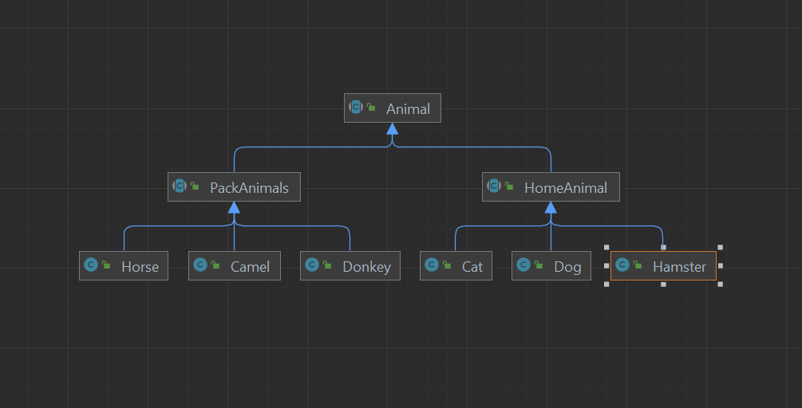

Используя команду cat в терминале операционной системы Linux, создать два файла
Домашние животные (заполнив файл собаками, кошками, хомяками) и
Вьючные животными заполнив файл Лошадьми, верблюдами и ослы),
а затем объединить их. Просмотреть содержимое созданного файла.
Переименовать файл, дав ему новое имя (Друзья человека)
cat "cat dog hamster" >> "home animals"
cat "camel donkey horse" >> "pack animals"
cat "home animals" "pack animals" > animals
cat animals
mv animals "friends human"
Создать директорию, переместить файл туда.
mkdir animals
mv animals animals/animals
Подключить дополнительный репозиторий MySQL
Установить любой пакет из этого репозитория
apt install mysql-server
Установить и удалить deb-пакет с помощью dpkg
sudo wget https://download.docker.com/linux/ubuntu/dists/jammy/pool/stable/amd64/docker-ce-cli_20.10.13~3-0~ubuntu-jammy_amd64.deb
sudo dpkg -i docker-ce-cli_20.10.133-0ubuntu-jammy_amd64.deb
sudo dpkg -r docker-ce-cli
Нарисовать диаграмму, в которой есть класс родительский класс, домашние животные и вьючные животные,
в составы которых в случае домашних животных войдут классы:
собаки, кошки, хомяки,
а в класс вьючные животные войдут:
Лошади, верблюды и ослы).
